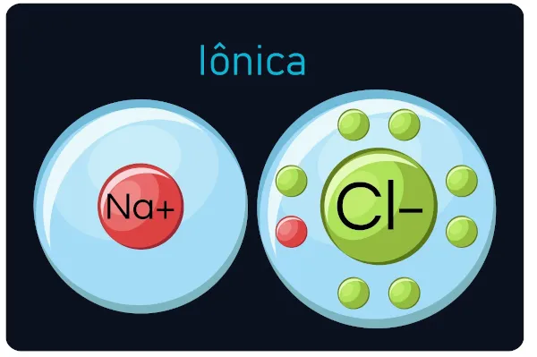

Tópicos Importantes
| Tópico | Descrição | Detalhes |
|---|---|---|
| Átomo de Hidrogênio | O átomo de hidrogênio (H) é o elemento mais simples e leve, composto por um único próton e um único elétron. | Veja os Detalhes |
| Molécula de Água | A água (H₂O) é uma molécula vital para a vida, composta por dois átomos de hidrogênio e um de oxigênio. | Veja os Detalhes |
| Reação Química | Uma reação química é um processo que envolve a transformação de substâncias (reagentes) em novas substâncias (produtos). | Veja os Detalhes |
A Importância da Química. Entenda o mundo ao seu redor.
A química é fundamental para entender as interações entre diferentes substâncias e suas propriedades. Ela nos ajuda a compreender processos naturais e a desenvolver novas tecnologias.
Explorando Reações. Descubra como as substâncias interagem.
As reações químicas são processos fascinantes que transformam substâncias em novas formas. Elas são essenciais em tudo, desde a digestão dos alimentos até a produção de energia em usinas.

Construindo Moléculas. A química em ação.
A combinação de átomos para formar moléculas é a base da química e da biologia. A estrutura molecular determina as propriedades físicas e químicas das substâncias.

Ligações Químicas
As ligações químicas são forças que mantêm os átomos unidos em moléculas e compostos. Existem três tipos principais de ligações: iônicas, covalentes e metálicas.
Ligação Iônica
Ocorre quando um átomo doa elétrons a outro, resultando em íons que se atraem devido à carga oposta.
Ligação Covalente
Formada quando dois átomos compartilham um ou mais pares de elétrons, criando uma molécula estável.
Ligação Metálica
Caracteriza-se pela partilha de elétrons entre muitos átomos, permitindo a condução de eletricidade e calor.
Modelos Atômicos
Os modelos atômicos são representações que ajudam a entender a estrutura e o comportamento dos átomos. Vários modelos foram propostos ao longo da história.
Modelo de Dalton
Propõe que os átomos são esferas indivisíveis e que cada elemento é composto por átomos idênticos.
Modelo de Thomson
Apresenta o átomo como uma esfera positiva com elétrons distribuídos, conhecido como "pudim de passas".
Modelo de Rutherford
Introduz o núcleo atômico, onde a maior parte da massa do átomo está concentrada, com elétrons orbitando ao seu redor.
Estados Físicos da Matéria
A matéria pode existir em diferentes estados físicos, dependendo das condições de temperatura e pressão. Os principais estados são sólido, líquido e gasoso.
Estado Sólido
Os sólidos têm forma e volume definidos, com partículas organizadas em uma estrutura fixa.
Estado Líquido
Os líquidos têm volume definido, mas não têm forma fixa, adaptando-se ao recipiente que os contém.
Estado Gasoso
Os gases não têm forma nem volume definidos, expandindo-se para preencher o espaço disponível.